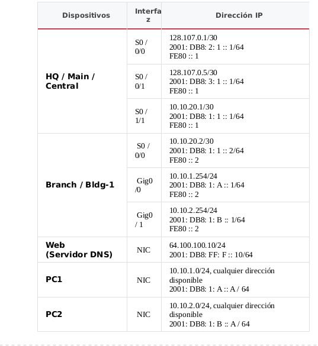

CCNA Routing and Switching Routing and Switching Essentials
Capítulo 2 SIC: Enrutamiento estático y configuración básica del enrutador

Algunas cosas a tener en cuenta al completar esta actividad:
1.No utilice el botón Atrás del navegador ni cierre ni vuelva a cargar las ventanas de examen durante el examen.
2.No cierre Packet Tracer cuando haya terminado. Se cerrará automáticamente.
3.Haga clic en el botón Enviar evaluación en la ventana del navegador para enviar su trabajo.
Introducción
New Corp. se está preparando para convertir su red para usar IPv6. Está experimentando con la transición y ha configurado una red de prueba que está configurada con direcciones IPv4 e IPv6 en todos los hosts e interfaces de dispositivos. La compañía utilizará rutas estáticas predeterminadas, estáticas y flotantes para crear conectividad en la red.
En esta evaluación de habilidades prácticas, configurará la red de New Corp. con la interfaz IPv4 e IPv6 y el direccionamiento del host, y las rutas estáticas flotantes y estáticas predeterminadas, IPv4 e IPv6. Además, completará una configuración básica en un enrutador.
No es necesario que configure el servidor de Internet o los conmutadores.
Nota: para mantener la actividad de evaluación lo más breve posible, solo configurará parcialmente algunos dispositivos, como se indica en las instrucciones. En una red real, todos los dispositivos estarían totalmente configurados para funcionar en la red. Usted solo es responsable de completar las tareas cubiertas en las instrucciones. Cualquier configuración que realice más allá de los requisitos no dará como resultado un crédito adicional.
Todas las configuraciones de dispositivos IOS deben completarse desde una conexión de terminal directa a la consola del dispositivo. Además, muchos valores que se requieren para completar las configuraciones no se le han dado. En esos casos, cree los valores que necesita para completar los requisitos.
Practicarás y serás evaluado en las siguientes habilidades:
- Configuración básica del enrutador
- Activación y direccionamiento de la interfaz del enrutador IPv4 e IPv6
- Configuración de ruta estática IPv4 e IPv6 directamente conectada
- Configuración de ruta predeterminada IPv4 e IPv6 directamente adjunta
- Configuración de ruta estática flotante IPv4 e IPv6 directamente conectada
- Direccionamiento IPv4 e IPv6
Tabla de direccionamiento
Instrucciones
Paso 1: Configuración básica del dispositivo
Realizar una configuración básica del dispositivo en Principal .
- Configure el nombre de host del router
- Evite que el enrutador intente resolver las entradas CLI no reconocidas como nombres de dominio.
- Proteja las configuraciones de dispositivos del acceso no autorizado con la contraseña secreta encriptada de cisco
- Asegure la consola del enrutador y las líneas vty con la clase de contraseña
- Evite que todas las contraseñas se vean en texto sin cifrar en los archivos de configuración del dispositivo.
- Agregue un banner del mensaje del día de su elección.
- Proporcionar descripciones en todas las interfaces activas.
Paso 2: Configurar rutas estáticas predeterminadas, estáticas y flotantes.
Configure rutas estáticas, predeterminadas y estáticas flotantes en los enrutadores.
Principal:
- Configure las interfaces del enrutador principal con direcciones IPv4 e IPv6 basadas en la tabla de direccionamiento .
- Configure dos rutas estáticas conectadas directamente en Main para llegar a las dos redes LAN IPv4 en el router Bldg-1 .
- Configure dos rutas estáticas conectadas directamente en Main para alcanzar las redes LAN de IPv6 en el router Bldg-1 .
- Configure las rutas estáticas predeterminadas de IPv4 conectadas directamente para llegar a los hosts fuera de la red.
- Configure la ruta primaria a través de Serial0 / 0/0.
- Configure una ruta estática predeterminada flotante para la ruta de respaldo a través de Serial0 / 0/1 con una métrica de 2.
- Configure las rutas estáticas predeterminadas de IPv6 directamente conectadas para llegar a los hosts fuera de la red.
- Configure la ruta principal a través de Serial0 / 0/0.
- Configure la ruta de respaldo a través de Serial0 / 0/1 con una métrica de 2 .
Edificio 1:
- Configure las interfaces en el enrutador Bldg-1 con direcciones IPv4 e IPv6 basadas en la tabla de direccionamiento .
- Configure una ruta estática predeterminada IPv4 conectada directamente en Bldg-1 para llegar a Internet.
- Configure una ruta estática predeterminada IPv6 conectada directamente en Bldg-1 para llegar a Internet.
paso 3: Configure Host Addressing
- Configure the Host A and Host B hosts with both IPv4 and IPv6 addresses based on the Addressing Table.
- Las direcciones de la puerta de enlace predeterminada de IPv6 deben ser la dirección local del enlace de la interfaz del enrutador de LAN.
- Configure the DNS server address for both IPv4 and IPv6.
- Todos los hosts de PC deben poder llegar al servidor de Internet.
Introducción - Script de respuestas
Principal o Central o HQ (Router 1)
en
conf ter
Nombre de host principal (o central) (o HQ)
sin búsqueda de dominio ip
habilitar cisco secreto
línea consola 0
clase de contraseña
iniciar sesión
línea vty 0 15
contraseña de cisco
iniciar sesión
salida
servicio de cifrado de contraseñas
banner motd $ CCNAv6.com $
int s0 / 0/0
Descripción CONEXIÓN PRIMARIA
dirección ip 128.107.0.1 255.255.255.252
dirección ipv6 2001: DB8: 2: 1 :: 1/64
dirección ipv6 FE80 :: 1 link-local
no apagarse
int s0 / 0/1
Descripción CONEXIÓN DE RESPALDO
dirección ip 128.107.0.5 255.255.255.252
dirección ipv6 2001: DB8: 3: 1 :: 1/64
dirección ipv6 FE80 :: 1 link-local
no apagarse
int s0 / 1/1
Descripción Conectar a Bldg-1
dirección ip 10.10.20.1 255.255.255.252
dirección ipv6 2001: DB8: 1: 1 :: 1/64
dirección ipv6 FE80 :: 1 link-local
no apagarse
salida
ruta ip 10.10.1.0 255.255.255.0 s0 / 1/1
ruta ip 10.10.2.0 255.255.255.0 s0 / 1/1
ruta ipv6 2001: DB8: 1: A :: / 64 s0 / 1/1
ruta ipv6 2001: DB8: 1: B :: / 64 s0 / 1/1
ruta ip 0.0.0.0 0.0.0.0 s0 / 0/0
ruta ip 0.0.0.0 0.0.0.0 s0 / 0/1 2
ruta ipv6 :: / 0 s0 / 0/0
ruta ipv6 :: / 0 s0 / 0/1 2
ipv6 unicast-routing
Edificio 1 o Búsqueda o Rama (Enrutador 2)
habilitar
terminal conf
int s0 / 0/0
dirección ip 10.10.20.2 255.255.255.252
dirección ipv6 2001: DB8: 1: 1 :: 2/64
dirección ipv6 FE80 :: 2 link-local
no apagarse
int g0 / 0
dirección ip 10.10.1.254 255.255.255.0
dirección ipv6 2001: DB8: 1: A :: 1/64
dirección ipv6 FE80 :: 2 link-local
no apagarse
int g0 / 1
dirección ip 10.10.2.254 255.255.255.0
dirección ipv6 2001: DB8: 1: B :: 1/64
dirección ipv6 FE80 :: 2 link-local
no apagarse
salida
int s0 / 0/0
descripción Conexión a Main
int g0 / 0
descripción LAN A
int g0 / 1
descripción LAN B
salida
ruta ip 0.0.0.0 0.0.0.0 s0 / 0/0
ruta ipv6 :: / 0 s0 / 0/0
ipv6 unicast-routing
Configurar direccionamiento de host
Anfitrión A:
Configuración de IPv4:
- Dirección IP: 10.10.1.10
- Máscara de subred: 255.255.255.0
- Puerta de enlace: 10.10.1.254
- Servidor DNS: 64.100.100.10
Configuración de IPv6:
- Dirección IPv6: 2001: DB8: 1: A :: A / 64
- Puerta de enlace IPv6: FE80 :: 2
- Servidor DNS IPv6: 2001: DB8: FF: F :: 10
Anfitrión B:
Configuración de IPv4:
- Dirección IP: 10.10.2.10
- Máscara de subred: 255.255.255.0
- Puerta de enlace: 10.10.2.254
- Servidor DNS: 64.100.100.10
Configuración de IPv6:
- Dirección IPv6: 2001: DB8: 1: B :: A / 64
- Puerta de enlace IPv6: FE80 :: 2
- Servidor DNS IPv6: 2001: DB8: FF: F :: 10